Award-Winning Recipe for Homemade, All-American Apple Pie
No food is more American than a hot, fresh, homemade apple pie. People have been making apple pies since before the USA was even a country. The pilgrims brought this delicious food to American soil in the 1500s. Since then, this dessert has become an icon of American culture. Store-bought apple pies just can't compare to homemade ones. It takes some time to make an apple pie from scratch, but it is definitely worth it. First, you will make a flaky, buttery crust. Next, you'll fill it with fresh, tart apples and spices like cinnamon and nutmeg. Finally, you layer strips of the crust over the filling to make the lattice pie top. This recipe has won 1st prize at many American county fairs. With our recipe, you'll see that making a delicious, homemade apple pie really is as easy as pie!
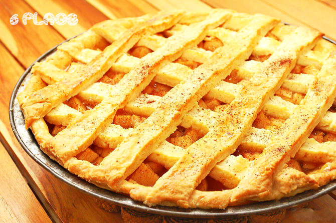
Crust Ingredients
- 2 cups of flour
- 1 teaspoon of salt
- 3/4 of a stick of butter
- 5 tablespoons of cold water
- 1 egg and some milk (for brushing, to make a golden glaze)
Filling Ingredients
- 1/3 cup of sugar
- 1/3 cup of brown sugar
- 1/4 teaspoon of salt
- 1 teaspoon of cinnamon
- 1/2 teaspoon of nutmeg
- 3 tablespoons of flour
- 6 to 8 medium-sized apples (Granny Smiths make for a more tart pie, Golden Delicious make for a sweeter pie.)
How to Make the Pie
- Preheat oven to 400 degrees.
- Make sure you have a clean, spacious counter top available for kneading and rolling out the dough.
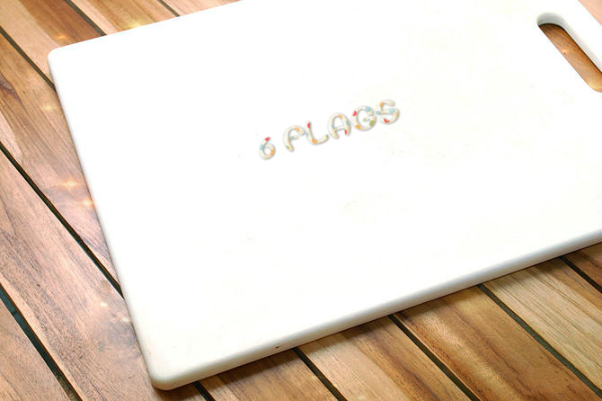
- Place the flour, salt, and butter in a large bowl. With a pastry blender or fork, crush the butter until it forms tiny balls with the flour. Then slowly add the water.
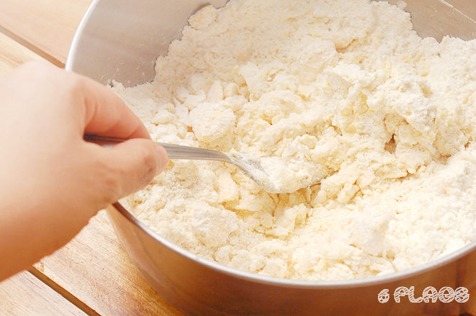
- Knead with floured hands until a large dough ball forms. Split the ball in half and wrap one of the piece in plastic wrap. Place the wrapped dough in the refrigerator. An alternative is to wrap both of the dough balls and refrigerate them for 30 minutes before proceeding to the next step.
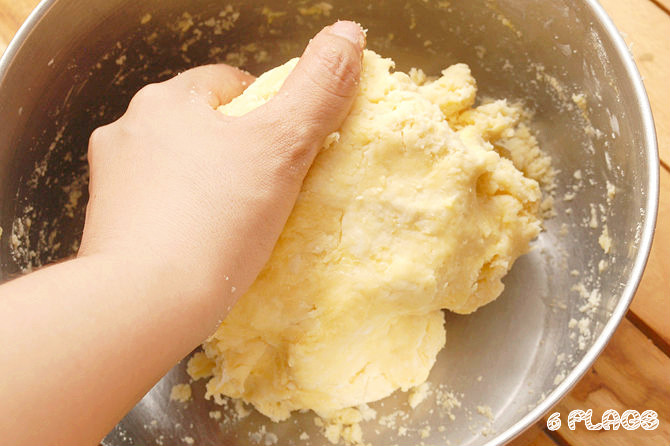
- On a floured counter-top, begin to roll the dough out into a circle shape about 2 inches (5.1 cm) larger in diameter than the pie pan. Some people prefer to place a layer of plastic wrap on top of the dough as it's being rolled so that it wouldn't stick to the rolling pin.
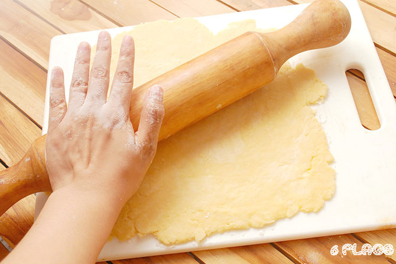
- Slowly lift the flattened dough off the counter-top by wrapping it completely around the rolling pin.
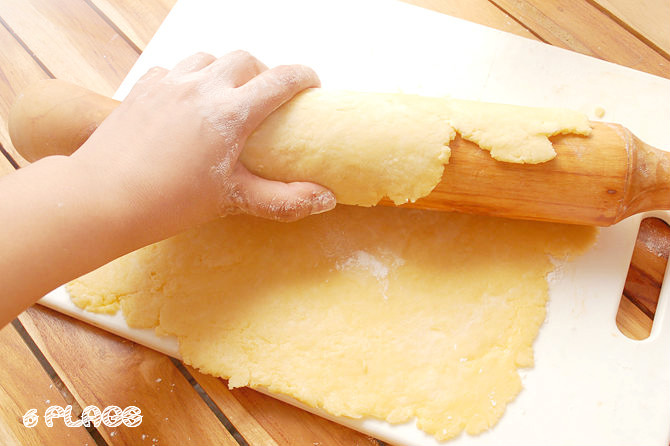
- Unroll the dough over the pan, being careful not to let it tear. Fit it into the pan, pressing it against all the sides.
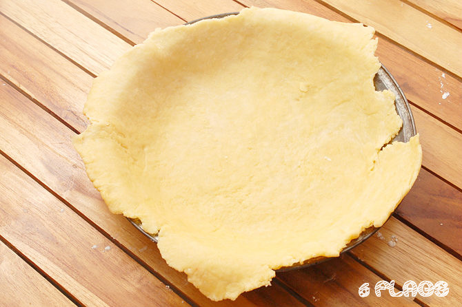
- Cut off the overhanging edges. Leave about 1⁄4 inch (0.6 cm) of extra dough over the pie pan.
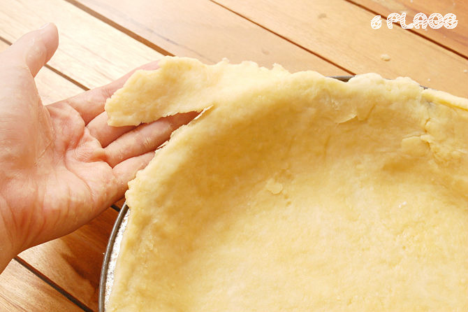
- Place the pie shell in the refrigerator.
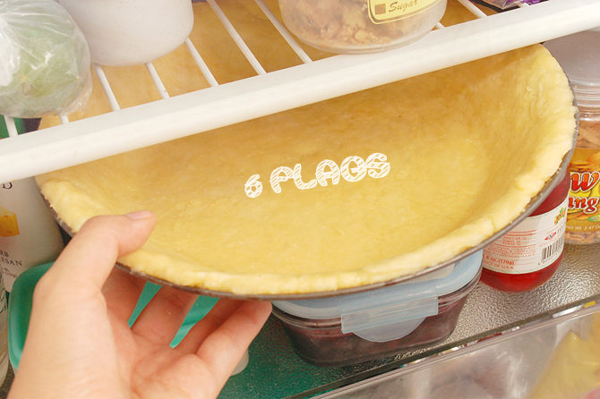
- Make the filling. Peel and slice the apples into pieces about 1/8 of an inch thick or chop them into 1/2" cubes. Put them into a large bowl and mix with sugars (white and brown), salt, lemon juice, flour, nutmeg and cinnamon (shake over to cover the top of mixture). Place in refrigerator.
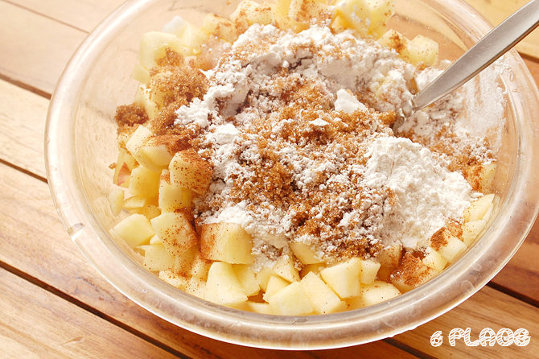
- Roll out the remaining ball of dough on a floured surface, just like you did before. Sliced top: Gently fold it in half and make 4 to 5 half inch long slices along the fold and 4 slices in the center of the folded piece. These will allow the filling to breath and not break through the sides. Unfold the top crust set it aside. Lattice top: Cut the rolled out dough into as many 1" wide strips as it will yield.
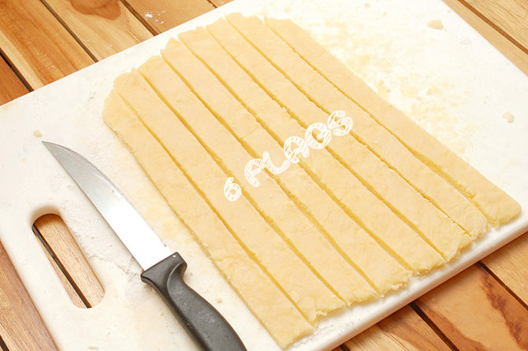
- Remove the pie shell and filling from the refrigerator.
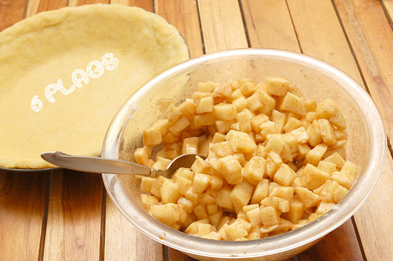
- Pour the filling into the pie shell, spreading it out with the back of a spoon. There should be enough filling to fill the entire pan and stack up above the edge at least an inch in the center.
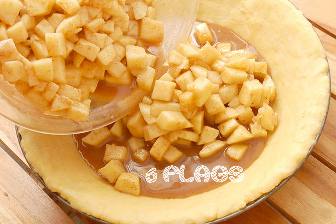
- Brush the edges of the pie shell with a beaten egg.
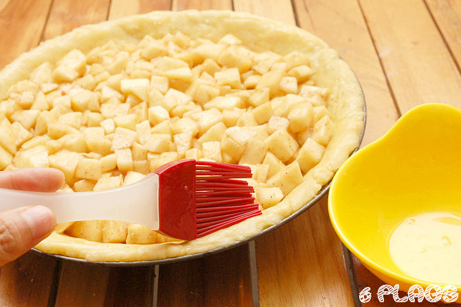
- Lay the top crust over the pie.
Sliced top: Lay the sliced top crust over filling. Cut off the excess edges with a butter knife. Take both thumbs facing each other and place them over the edge. Push thumbs down and towards each other. Do this around the entire pie to seal it.
Lattice top: Place the pastry strips across the top of the apples in a criss-cross pattern, then weave them together to create a lattice effect. Cut off the overhanging excess pastry and press the edges down into the rim as previously described.
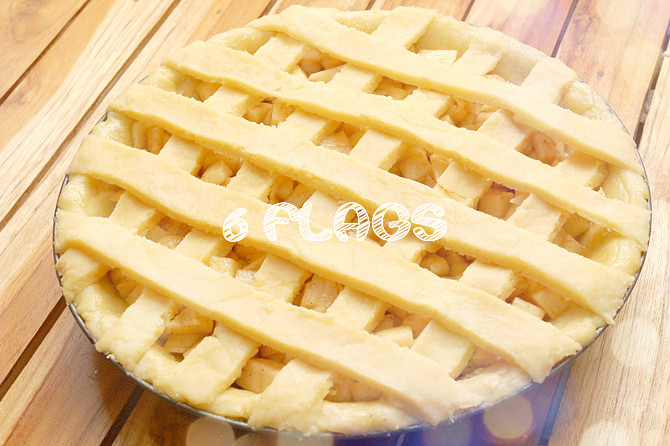
- Sprinkle milk over the top or brush the lattice with the egg wash. This will help to brown the crust. Dust cinnamon and sugar over the top crust for an extra touch.
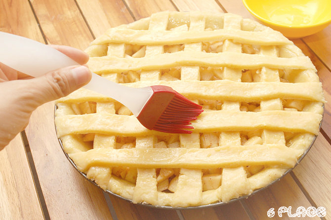
- Bake at 400ºF (200ºC) for 15 minutes. Turn down the oven to 375ºF (190ºC) for 45 minutes. -Remove when top crust is golden brown.
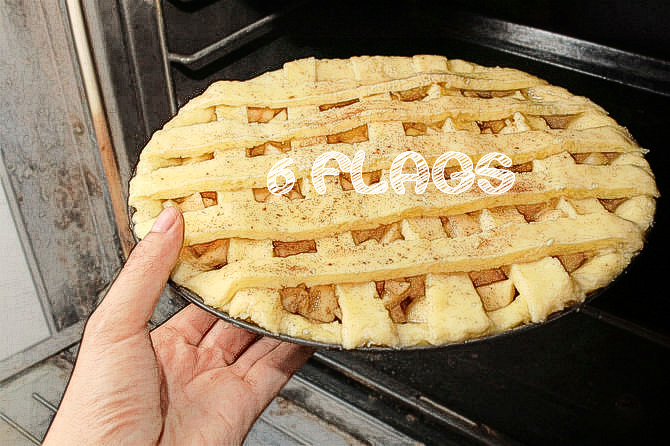
- Allow the pie to cool 45 minutes to 1 hour at room temperature before serving.
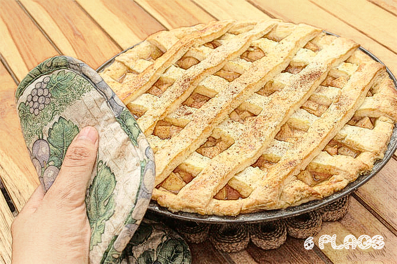
- There you have it! A beautiful, homemade apple pie!